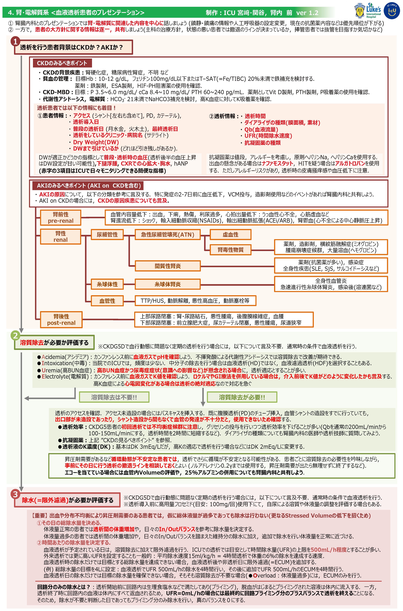

① 腎臓内科とのプレゼンでは腎・電解質に関連した内容を中心に話しましょう
（鎮静・鎮痛の情報や人工呼吸器の設定変更、現在の抗菌薬内容などは優先順位が下がる）
② 一方で、患者の大方針に関する情報は逐一、共有しましょう
（主科の治療方針、撤退ラインが決まっているか、挿管患者では抜管を目指すか気切かなど）
①患者情報
②透析情報
| 腎前性 pre-renal |
|
| 腎性 renal |
|
| 腎後性 post-renal |
|
※CKDG5Dで血行動態に問題なく定期透析を行う場合は言及不要。
※CKDG5Dで血行動態に問題なく定期透析を行う場合は言及不要。
バランスや検査所見（O）については言及できているが、溶質や体液量に関するアセスメント、本日の透析プラン（溶質除去、除水）に関する部分がなく、良いプレゼンとは言えない。
●●さんは糖尿病性腎症によるCKDG5Dで、□□クリニックにて月水金でHDをされている83歳男性です。A-DROP 3点の市中肺炎で昨日、入院となりHFNCでの呼吸管理が必要となったため、ICU入室となりました。かかりつけ先からの診療情報ではDW65kgで最終透析は一昨日です。入院時の体重は66.8kgでした。収縮期血圧は130mmHg程度と安定しており、下腿浮腫や胸部CT検査で胸水貯留はないことから、酸素化低下の原因は肺炎が主と考えています。大方針としては現行のHFNCをデバイスの上限に、一般床退室を目指します。本日、透析日であり、ICUにて定期のHD（=増え分の除水と溶質除去）をお願いいたします。
HD患者の酸素化低下では、体液量過多が鑑別となることから客観的な所見（O）を示しながら溢水の可能性は低いと考えていることを伝えている。DWや透析日など、前ページで示したCKD患者の把握ポイントは、診療情報提供書や以前の透析記録から情報をキャッチしておこう。
●●さんはAMLに対して地固め療法2コース目施行中、4月12日に敗血症性ショックでICU入室となり、その後、septic AKIで血液透析を導入した57歳男性です。現在は挿管管理のうえ、培養結果を待ちながら抗菌薬加療を継続し、骨髄抑制からの回復を評価中です。最終透析は先週金曜日で、その際はUFR 100mL/hで除水を開始したところ血圧低下をきたし、昇圧剤需要がでたことから溶質除去のみで終了としました。週末にかけてKの上昇を認めたため、土曜日よりロケルマを維持量で開始しています。本日朝の血液検査ではpH 7.21、K 5.5mEq/L、BUN 143mg/dLでやや傾眠傾向であり、これらを適応として本日も、溶質除去をお願いいたします。先週水曜日に直腸潰瘍をきたした経緯から、抗凝固はナファモスタットでお願いいたします。除水については、体重が連日+1kgずつの増加で推移しているものの、炎症高値が遷延しており血管内Volumeは少ないと考えています。本日は25%アルブミンを使用しながら回路分の除水を目指し、ノルアドレナリン0.1γ以上の昇圧剤需要が生じた場合は、除水中止の方針でいかがでしょうか。
●●さんはAMLに対して地固め療法2コース目施行中、4月12日に敗血症性ショックでICU入室となり、その後、septic AKIで血液透析を導入した57歳男性です。現在は挿管管理のうえ培養結果を待ちながら抗菌薬加療を継続し、骨髄抑制からの回復を評価中です。昨日はQb200で溶質除去とUFR 500mL/hの除水を計4時間行い、そのまま2時間のECUMを追加しました。尿量は100mL/dayで依然として少なく、昨日のバランスは1500/3200/-1700、体重も前日から-2kgとなっています。本日朝の血液検査所見はpH7.32、K3.8meq/L、BUN84mg/dLであり、本日の溶質除去は不要と考えます。一方で、ICU入室前と比較すると依然、6kgの体重増加が残存し、ベッドサイドエコーや胸部単純写真でも胸水貯留や肺門部陰影の増強など見られること、今後、抜管を目指して体液量の正常化を進めたいことから、本日はフロセミドの持続投与、または、UFR 500mL/hで4時間のECUMはいかがでしょうか。現在、ノルアドレナリン0.05γの昇圧剤需要があるものの、鎮静によるカウンターと考えており、ノルアドレナリン0.2γまでは許容したいと考えています。
ICU入室患者でよくあるケース。ショックの患者では蘇生期に輸液負荷や抗菌薬の溶媒でプラスバランスにかさみ、昇圧剤需要が遷延してなかなか利尿に踏み切れないことがある。前日に血液透析を行った場合には、どのような条件で透析をしたのか、その結果、本日の血液検査データや体液量がどうなったのかを伝えよう。溶質除去を依頼する際には、どのような適応があるのかを明示する。また、抗凝固薬をヘパリンから変更する必要があると考える場合には、理由とともに必ず言及をすること。除水については、考えられる患者のVolume status、UFRなど除水のプラン、循環動態が不安定な場合には除水を撤退する線引きを明確にするとよい。
●●さんは転倒を契機とした腰椎圧迫骨折で体動困難となり、飲水量低下によるpre-renal AKIと、高K血症で先ほど入院となった89歳女性です。高K血症は、AKIを生じた中で常用のK製剤を継続したことが原因と考えています。来院時の血清クレアチニンはベースライン1mg/dLに対して6.4mg/dLと上昇しており、Kは7.2mg/dL、心電図ではT波増高を認めました。救急外来でGI療法とカルチコール、ロケルマ10mgを投薬し、Foley挿入を行いましたが尿は得られず、緊急血液透析の適応と考えます。カンファレンス後に速やかにバスキャス挿入を行いますので、初回透析につき効率は落としつつDK 2mEq/Lで溶質除去はいかがでしょうか。除水について、現在、酸素需要はなく、下腿浮腫なし、胸部単純写真でも心拡大や胸水貯留を認めていないため、現時点では不要と考えています。
AKIや高K血症の原因について、何が原因と考えているのかアセスメントをしっかり述べるようにしよう。高K血症については、具体的な数値や心電図所見、来院からこれまでにどのような介入を行っているのかを明示する。その上で、緊急透析を行うかどうかのプランを腎臓内科に提示しよう。除水についても、行う場合と行わない場合それぞれ、根拠を示すように。
●●さんは腎盂腎炎による敗血症性ショックでICU入室となり、septic AKIで血液透析を施行中の89歳女性です。すでにショックは離脱し、尿量も増加傾向で昨日は利尿薬の使用なく650mL/日で1日のTotalバランスは+780mL/dayでした。透析離脱を検討するにあたり、溶質面では先週から各透析前のBUNやCrは低下しており、体液面でも昨日ラシックス100mgIVにて1日のIN以上の1500ml程度の尿量を得られています。以上から本日以降の透析はひとまずskipの方針として、今後は再度BUNやCrが上昇する場合、ラシックスにて十分なら尿量得られない場合に再度透析を行う形で離脱を目指すのはいかがでしょうか。
透析離脱を目指す患者では、尿量はもちろんのこと（利尿薬使用下なのかどうかにも言及）、非透析日間の溶質や体液量の推移について言及。尿も溶質面と体液面に分けて考える。溶質除去：各HD日の採血にてBUNやCrが低下傾向＝溶質除去をできるようになってきている、体液面：利尿薬にて1日のIn以上の尿量が出そうか（＝利尿薬にて体液管理をできそうか）。その上で、もともと透析が予定されている日であれば、透析をスキップするかどうか、腎臓内科の先生と相談しよう。
制作：ICU 宮﨑・関谷、腎内 前 ver 1.2